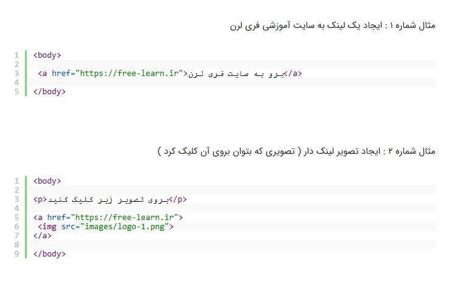
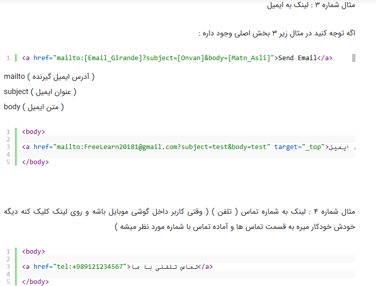
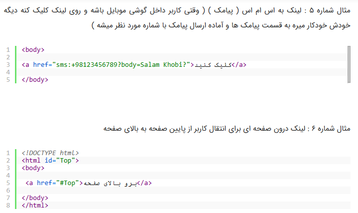
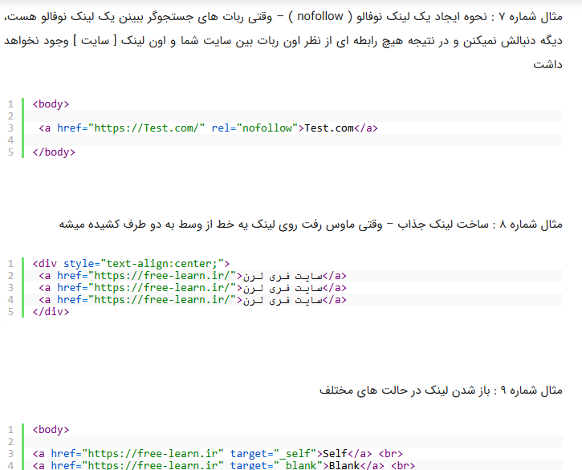

تگ <a> که از کلمه ( Anchor ) گرفته شده است، تگی است که ما با استفاده از آن میتوانیم یک لینک را در یک صفحه ی وب ایجاد نماییم. و این لینک میتواند کاربر را از یک صفحه به صفحه ی دیگر در یک وبسایت یا در کل فضای اینترنت منتقل نماید.
9 مورد از کاربرد های تگ <a>



